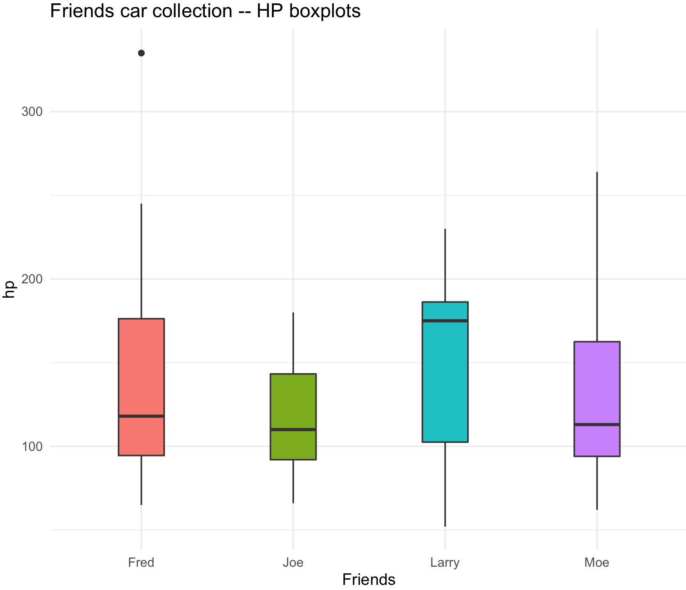
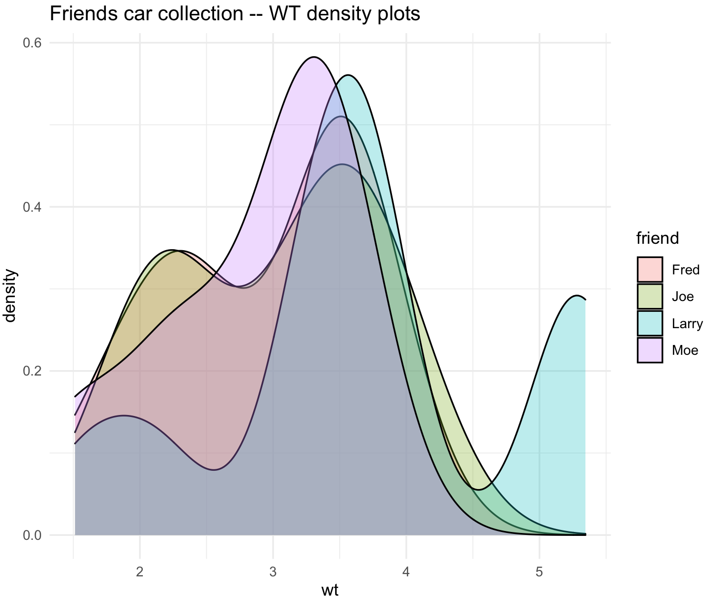
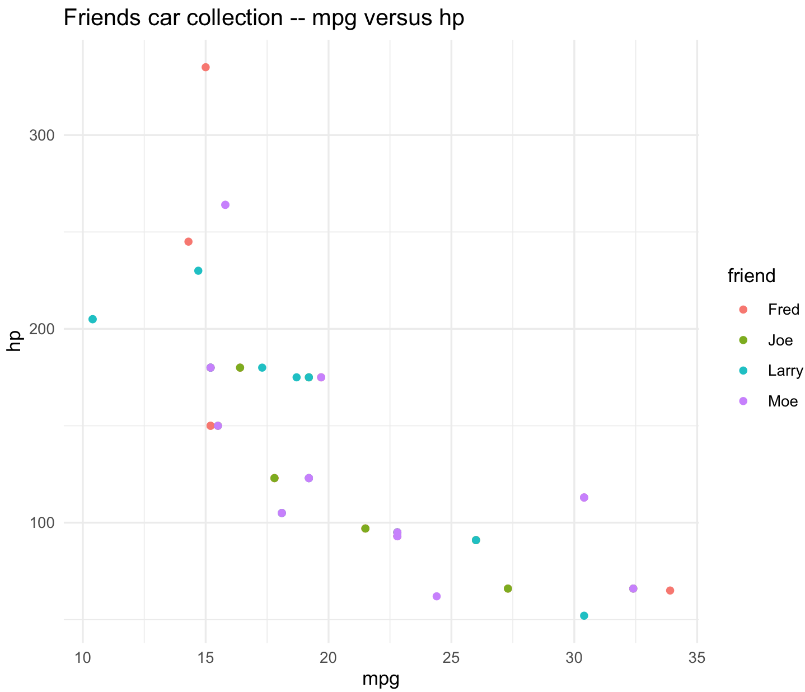

Session 14 – Mining from a reference dataset
Sometimes you have a list of individuals with some indices and you want to retrieve values associated from a large reference database or data frame. Using these indices will help you retrieve data from these references without going to the painstaking work to copy-and-pasting such value one by one.
14.1 A worked example using the mtcars dataset
We will assume that you have four friends (Joe, Moe, Larry, Fred) and each one has a collection of cars. They want to compare the overall collection based on statistics provided by mtcars dataset.
14.2 Build a reference dataset
1) We will create the reference database as mtcars_data from the preloaded mtcars dataset. This dataset exists in the R environment. You can import a data frame (e.g., a txt or excel file) as data frame, but make sure that you include the indexing variable: my_index as demonstrated below.
## this is an example to create a reference index
mtcars_data <- mtcars
## we need to create a indexing variable, so will use car names
mtcars_names_vector <- rownames(mtcars_data)
mtcars_names_vector
#[1] "Mazda RX4" "Mazda RX4 Wag" "Datsun 710" "Hornet 4 Drive" "Hornet Sportabout" "Valiant"
# [7] "Duster 360" "Merc 240D" "Merc 230" "Merc 280" "Merc 280C" "Merc 450SE"
#[13] "Merc 450SL" "Merc 450SLC" "Cadillac Fleetwood" "Lincoln Continental" "Chrysler Imperial" "Fiat 128"
#[19] "Honda Civic" "Toyota Corolla" "Toyota Corona" "Dodge Challenger" "AMC Javelin" "Camaro Z28"
#[25] "Pontiac Firebird" "Fiat X1-9" "Porsche 914-2" "Lotus Europa" "Ford Pantera L" "Ferrari Dino"
#[31] "Maserati Bora" "Volvo 142E"
## this vector has spaces (" ") and dashes (-), these might cause problems with some analyses and functions, we will replace them with underscores "_"
mtcars_names_vector <- gsub(" ", "_", mtcars_names_vector)
mtcars_names_vector <- gsub("-", "_", mtcars_names_vector)
mtcars_names_vector
#[1] "Mazda_RX4" "Mazda_RX4_Wag" "Datsun_710" "Hornet_4_Drive" "Hornet_Sportabout" "Valiant"
# [7] "Duster_360" "Merc_240D" "Merc_230" "Merc_280" "Merc_280C" "Merc_450SE"
#[13] "Merc_450SL" "Merc_450SLC" "Cadillac_Fleetwood" "Lincoln_Continental" "Chrysler_Imperial" "Fiat_128"
#[19] "Honda_Civic" "Toyota_Corolla" "Toyota_Corona" "Dodge_Challenger" "AMC_Javelin" "Camaro_Z28"
#[25] "Pontiac_Firebird" "Fiat_X1_9" "Porsche_914_2" "Lotus_Europa" "Ford_Pantera_L" "Ferrari_Dino"
#[31] "Maserati_Bora" "Volvo_142E"
## we can now add this vector as our indexing variable
mtcars_data$my_index <- mtcars_names_vector
head(mtcars_data)
# mpg cyl disp hp drat wt qsec vs am gear carb my_index
#Mazda RX4 21.0 6 160 110 3.90 2.620 16.46 0 1 4 4 Mazda_RX4
#Mazda RX4 Wag 21.0 6 160 110 3.90 2.875 17.02 0 1 4 4 Mazda_RX4_Wag
#Datsun 710 22.8 4 108 93 3.85 2.320 18.61 1 1 4 1 Datsun_710
#Hornet 4 Drive 21.4 6 258 110 3.08 3.215 19.44 1 0 3 1 Hornet_4_Drive
#Hornet Sportabout 18.7 8 360 175 3.15 3.440 17.02 0 0 3 2 Hornet_Sportabout
#Valiant 18.1 6 225 105 2.76 3.460 20.22 1 0 3 1 Valiant14.3 Build a sampling dataset
2) Now, we will create a data frame to be used to retrive the information for the friends_data. Our indexing varaible will be my_index, so the information on mtcars_data can be combined, merged or subset to match the friends_data. A similar procedure can be performed by importing a data frame (e.g., a txt or excel file) with the same data frame, make sure that my_index variable is present.
This is an illustration of how to make a data frame with data that can be indexed.
## we will start with four random vectors of the my_index variable to serve as what cars these friends have
Joe_10_cars_vector <- sample(mtcars_data$my_index, 10, replace = TRUE)
Moe_15_cars_vector <- sample(mtcars_data$my_index, 15, replace = TRUE)
Larry_12_cars_vector <- sample(mtcars_data$my_index, 12, replace = TRUE)
Fred_20_cars_vector <- sample(mtcars_data$my_index, 20, replace = TRUE)
## NOTICE: that this are random samples and each of you will get a different set.
## we build a two-column data frame as follows by making a list of data frames and collect each one
friends_list <- list()
## Joe
Joe_df <- data.frame(my_index = Joe_10_cars_vector, stringsAsFactors = FALSE)
Joe_df$friend <- "Joe"
friends_list[[1]] <- Joe_df
## Moe
Moe_df <- data.frame(my_index = Moe_15_cars_vector, stringsAsFactors = FALSE)
Moe_df$friend <- "Moe"
friends_list[[2]] <- Moe_df
## Larry
Larry_df <- data.frame(my_index = Larry_12_cars_vector, stringsAsFactors = FALSE)
Larry_df$friend <- "Larry"
friends_list[[3]] <- Larry_df
## Fred
Fred_df <- data.frame(my_index = Fred_20_cars_vector, stringsAsFactors = FALSE)
Fred_df$friend <- "Fred"
friends_list[[4]] <- Fred_df
## we rbind these data frames into one
friends_data <- do.call(rbind,friends_list)
str(friends_data)
#'data.frame': 57 obs. of 2 variables:
# $ my_index: chr "Porsche_914_2" "Dodge_Challenger" "Merc_450SE" "Fiat_X1_9" ...
# $ friend : chr "Joe" "Joe" "Joe" "Joe" ...
head(friends_data)
# my_index friend
#1 Porsche_914_2 Joe
#2 Dodge_Challenger Joe
#3 Merc_450SE Joe
#4 Fiat_X1_9 Joe
#5 Merc_280C Joe
#6 Merc_230 Joe14.4 Extracting from reference dataset
3) We can subset the mtcars_data to match the friends_data using the function merge and the argument by.x = "my_index". This will subset and merge from the mtcars_data the information about the cars based only on values of my_index in friends_data.
## with reference data frame
friends_data_with_mtcars_data <- merge(friends_data, mtcars_data, by.x = "my_index")
head(friends_data_with_mtcars_data)
# my_index friend mpg cyl disp hp drat wt qsec vs am gear carb
#1 AMC_Javelin Fred 15.2 8 304 150 3.15 3.435 17.30 0 0 3 2
#2 AMC_Javelin Fred 15.2 8 304 150 3.15 3.435 17.30 0 0 3 2
#3 Cadillac_Fleetwood Larry 10.4 8 472 205 2.93 5.250 17.98 0 0 3 4
#4 Cadillac_Fleetwood Larry 10.4 8 472 205 2.93 5.250 17.98 0 0 3 4
#5 Chrysler_Imperial Larry 14.7 8 440 230 3.23 5.345 17.42 0 0 3 4
#6 Datsun_710 Moe 22.8 4 108 93 3.85 2.320 18.61 1 1 4 1
## we can order by friend name
friends_data_with_mtcars_data_order <- friends_data_with_mtcars_data[order(friends_data_with_mtcars_data$friend),]
head(friends_data_with_mtcars_data_order)
# my_index friend mpg cyl disp hp drat wt qsec vs am gear carb
#1 AMC_Javelin Fred 15.2 8 304 150 3.15 3.435 17.30 0 0 3 2
#2 AMC_Javelin Fred 15.2 8 304 150 3.15 3.435 17.30 0 0 3 2
#7 Datsun_710 Fred 22.8 4 108 93 3.85 2.320 18.61 1 1 4 1
#8 Datsun_710 Fred 22.8 4 108 93 3.85 2.320 18.61 1 1 4 1
#12 Duster_360 Fred 14.3 8 360 245 3.21 3.570 15.84 0 0 3 4
#13 Ferrari_Dino Fred 19.7 6 145 175 3.62 2.770 15.50 0 1 5 64) You can determine different parameters of the car sets per each friend and compere between them
## We will split the large data frame into each friend
list_friends <- split(friends_data_with_mtcars_data_order, friends_data_with_mtcars_data_order$friend)
## fred
fred_df <- list_friends[[1]]
head(fred_df)
# my_index friend mpg cyl disp hp drat wt qsec vs am gear carb
#1 AMC_Javelin Fred 15.2 8 304 150 3.15 3.435 17.30 0 0 3 2
#2 AMC_Javelin Fred 15.2 8 304 150 3.15 3.435 17.30 0 0 3 2
#7 Datsun_710 Fred 22.8 4 108 93 3.85 2.320 18.61 1 1 4 1
#8 Datsun_710 Fred 22.8 4 108 93 3.85 2.320 18.61 1 1 4 1
#12 Duster_360 Fred 14.3 8 360 245 3.21 3.570 15.84 0 0 3 4
#13 Ferrari_Dino Fred 19.7 6 145 175 3.62 2.770 15.50 0 1 5 6
## you can do the same as: fred_df <- subset(friends_data_with_mtcars_data_order, friend == "Fred")
joe_df <- list_friends[[2]]
larry_df <- list_friends[[3]]
moe_df <- list_friends[[4]]We can ask which friend has more weight in their car set?
sum(fred_df$wt)
#[1] 58.893
sum(joe_df$wt)
#[1] 30.205
sum(larry_df$wt)
#[1] 44.445
sum(moe_df$wt)
#[1] 44.445In this case, Fred clearly has won. We can ask which friend has more horsepower in their car set?
sum(fred_df$hp)
#[1] 2756
sum(joe_df$hp)
#[1] 1166
sum(larry_df$hp)
#[1] 1816
sum(moe_df$hp)
#[1] 181614.5 Plots of the extracted data
5) We can do some plots to exemplify some of these observations.
We can plot boxplots for hp.
## check ig ggplot2 is loaded
require(ggplot2)
## Boxplots with standard color
friends_hp_boxplot <- ggplot(friends_data_with_mtcars_data_order, aes(x=friend, y=hp, fill=friend)) +
geom_boxplot(width=0.3) +
labs(title="Friends car collection -- HP boxplots", x="Friends", y="hp") +
guides(fill=FALSE) +
theme_minimal()
friends_hp_boxplot
We can plot density for wt.
## Overlaid densities
friends_wt_plot_den <- ggplot(friends_data_with_mtcars_data_order, aes(x=wt, fill=friend)) +
geom_density(alpha=.3) +
ggtitle("Friends car collection -- WT density plots") +
theme_minimal()
friends_wt_plot_den
We can have a scatterplot for mpg by hp.
## scatterplot
friends_scatterplot_mpg_hp <- ggplot(friends_data_with_mtcars_data_order, aes(x=mpg, y = hp, color=friend)) +
geom_point() +
ggtitle("Friends car collection -- mpg versus hp") +
theme_minimal()
friends_scatterplot_mpg_hp